In scope: processamento do conversor de Exportação (ramo 32) com SqlBulkCopy sob Ind_Conversor_Processamento_BulkCopy: paridade funcional, performance, atomicidade, regressão (indicativo inativo), multi-seguradora.
Out of scope: etapa de Conversão; conversores Nacional/RCTR-VI/Importação; produção.
Pré-requisitos:
- Ambiente: CITWEB HML AXA —
ROT_AUTO / •••••• (senha no .env) - Fix de Exportação deployado em HML AXA
- Cotação USD (código 220) vigente — Tabelas → Cadastros → Cotações de Moeda
- Arquivo de Exportação com ≥ 7.000 registros [massa a gerar] + arquivo pequeno p/ smoke
- Apólice(s) de Exportação AXA; acesso SQL HML p/ fila de pendentes e averbações
Grupo 1 — Processamento BulkCopy (funcional)
3▼Objetivo
Garantir que a Conversão (não alterada) segue funcionando após o refactoring do Processamento.
Passos
- Logar no CITWEB HML AXA
- Navegar ao Conversor de Exportação [caminho a validar]
- Upload do arquivo pequeno + Conversão
- Confirmar conversão sem erro
Resultado Esperado
Ambiente: CITWEB HML · build V 1.0.260729.1115 · 31/07/2026
Obtido
Banner "Conversão do arquivo concluído com sucesso!" · Total 20 / Conversões incluídas 20 / Registros com erro 0 (idem no lote de 7.500: 7500/7500/0). Layout CARD 7707 - REFATORAÇÃO EXPORTAÇÃO.
Observação
Rota correta: CITWEB → tile Conversor de Arquivos (app=CONVERSOR) → Converte Arquivo → Exportação (/Conversor/Conversor?menu=ConversorExportacao). O layout da dev aparece normalmente para o usuário QA neste sistema.
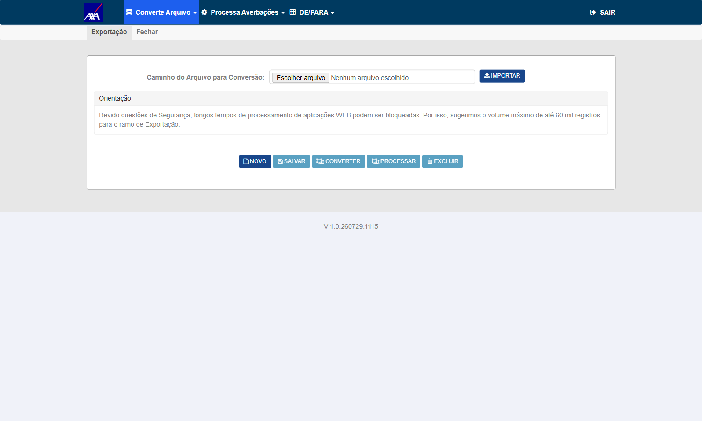
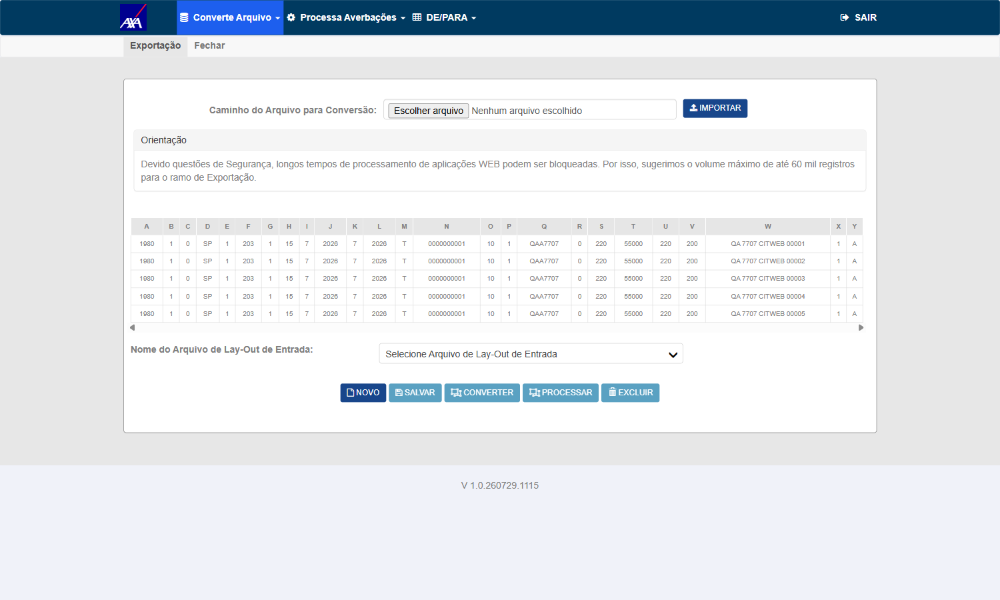
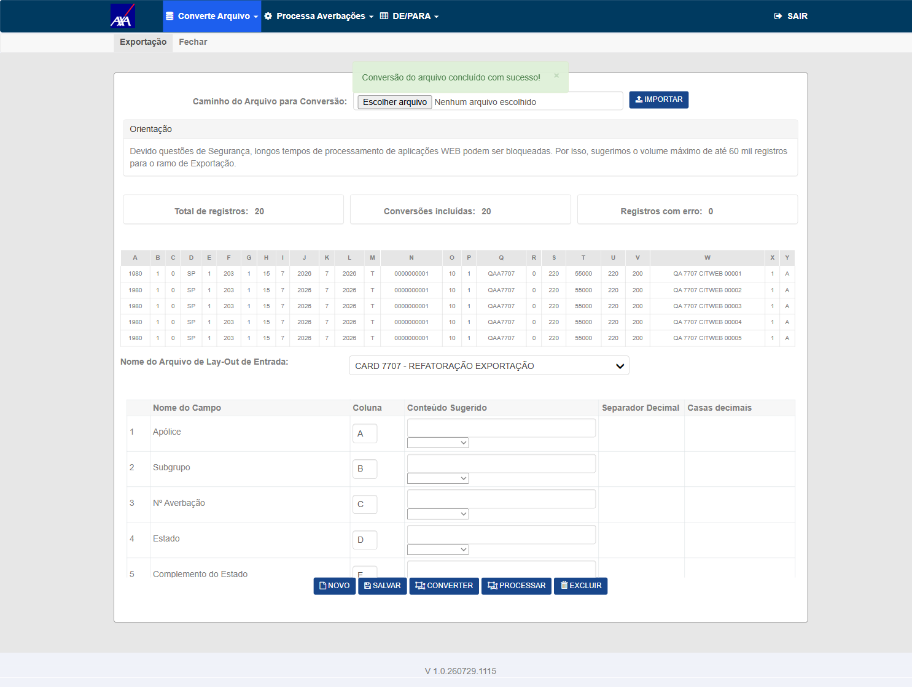
Objetivo
Verificar que o processamento BulkCopy produz o mesmo resultado do fluxo linha a linha.
Passos
- Processar com indicativo ativo
- Anotar Aceitas/Rejeitadas
- Comparar com o mesmo arquivo em fluxo linha a linha (CT-CEX-007)
- SQL: conferir averbações gravadas
Resultado Esperado
Ambiente: CITWEB HML · build V 1.0.260729.1115 · 31/07/2026
Obtido
Banner "Processamento do arquivo concluído com sucesso!" · Averbações incluídas 20 / Registros com erro 0. Aceitas + Rejeitadas = Total em todas as execuções. SQL: definitivas 2026003769–2026003788 gravadas em tb_mov_avb_int_cit (IS total R$ 1.104.077,20); fila de pendentes drenada a 0.
Observação
Controller exercitado: ProcessamentoAverbacoesExportacao/Processar — o alvo do refactor.
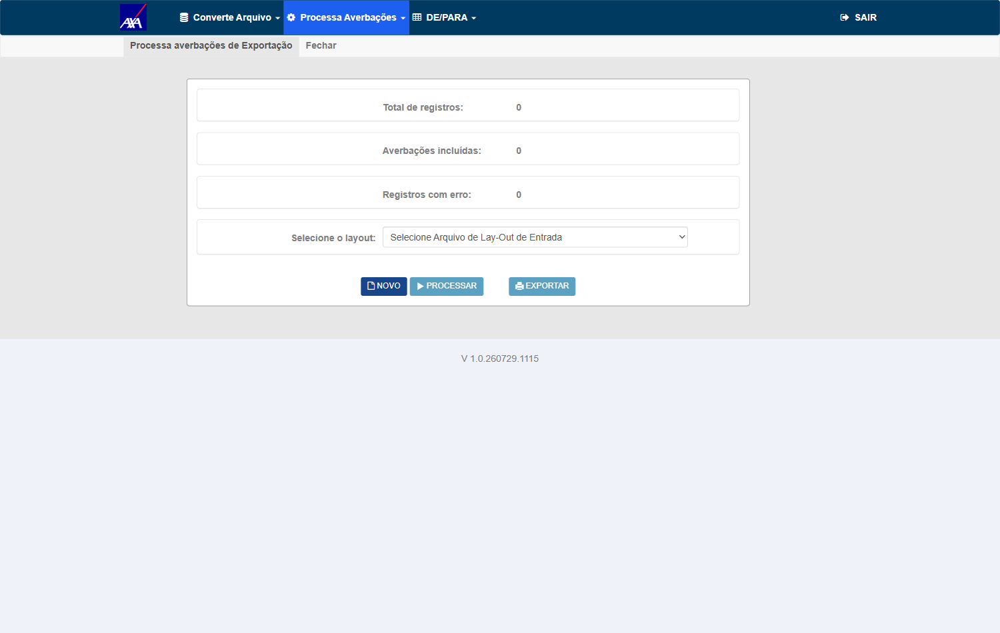
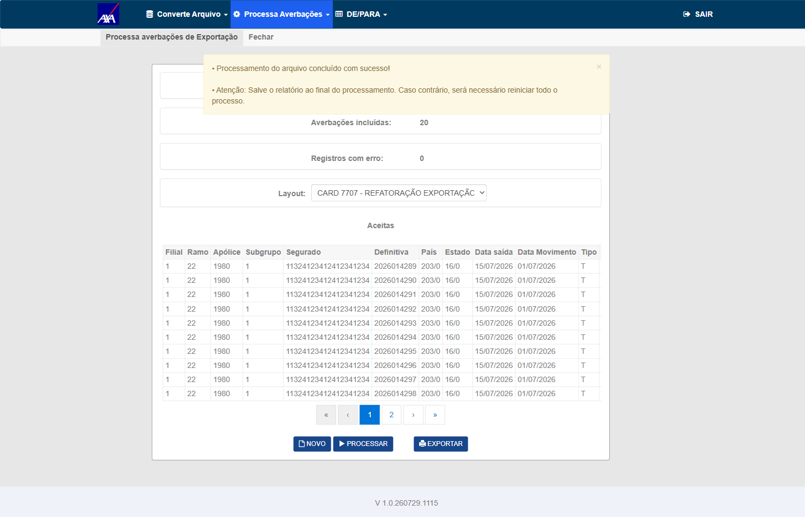
Objetivo
Validar processamento de grande volume sem timeout — objetivo central do refactoring.
Passos
- Processar arquivo ≥ 7.000 registros
- Cronometrar tempo total
- Confirmar conclusão sem timeout + gravação das averbações válidas
Resultado Esperado
Ambiente: CITWEB HML · build V 1.0.260729.1115 · 31/07/2026
Obtido
Conversão de 7.500 em 148,7s (7500/7500, 0 erro) e Processamento em 191,5s — Averbações incluídas 7.500 / Registros com erro 0, sem timeout e sem erro de servidor. SQL: 7.500 definitivas 2026003789–2026011288 gravadas, IS total R$ 414.028.950,00; fila de pendentes zerada.
Observação
Massa gerada pelo QA alinhada ao layout da dev: exp_citweb_7500_7707.xlsx (25 colunas A..Y, sem cabeçalho).

Grupo 2 — Performance
2▼Objetivo
Medir throughput e comparar com o critério herdado do RCTR-VI (≥ 0,5s/registro).
Passos
- Processar (mesma apólice) e cronometrar
- tempo médio/registro = total ÷ nº registros
- Comparar com baseline produção Exportação e o critério
Resultado Esperado
Ambiente: CITWEB HML · build V 1.0.260729.1115 · 31/07/2026
Obtido
191,5s ÷ 7.500 registros = 0,026 s/registro na mesma apólice (1980). Critério herdado do #7471: ≤ 0,5 s/registro. Comparativo colhido na mesma sessão: 500 registros em 16–19s (0,032–0,038 s/reg) na AXA contra 0,074 s/reg na KOVR (indicativo inativo, gravação linha a linha) — o ganho do BulkCopy é visível no throughput.
Observação
Tempo cronometrado no cliente, do clique em PROCESSAR até o banner de conclusão.
Objetivo
Garantir que o BulkCopy não introduziu serialização/lock entre usuários (padrão CT-RVI-009).
Passos
- [Sessão A] processar arquivo A
- [Sessão B] processar arquivo B em paralelo
- Confirmar que ambos concluem sem travar
Resultado Esperado
Obtem_Proxima_Averbacao_Exportacao (e os métodos irmãos de
Importação e RCTR-VI) geravam o próximo número via SELECT MAX(u_avb_dfv)+1,
sem reserva atômica — e o BulkCopy introduzido neste mesmo card ampliou a janela
de corrida. Solução publicada em AXA e KOVR HML em 31/07 15:15.
| Rodada | Sincronismo medido | HTTP 500 | Integridade (por layout) |
|---|---|---|---|
| 1 | — | nenhum | 500 → 500 proc · 0 rjt · 0 sobra |
| 2 | 3 ms entre os cliques | nenhum | 500 → 500 proc · 0 rjt · 0 sobra |
| 3 | 15 ms entre os cliques | nenhum | 500 → 500 proc · 0 rjt · 0 sobra |
| 4 (métrica corrigida) | 31 ms entre os POST · sobreposição ~16,2 s | nenhum | 500 → 500 proc · 0 rjt · 0 sobra |
- Só havia handler de resposta, e o número era rotulado "Δ entre os POST". Media diferença de conclusão: 14.426 ms, que é exatamente |dur A − dur B| (21,9 s vs 36,2 s).
- Ao acrescentar o handler de requisição, peguei o primeiro POST
casando "Processa". Os
select_optiondos filtros fazem postback para o mesmo controller — então esse primeiro POST é um postback de filtro. Na sessão A o timestamp vinha 21,9 s antes do próprio clique, e o "Δ" de 18.424 ms era defasagem entre filtros. Cheguei a interpretar isso como "o barrier não funciona"; era o oposto.
pendentes_antes = processadas + rejeitadas + pendentes_que_sobraram. Qualquer
registro fora dessas três contas seria perda silenciosa. Fechou em 8 de 8 conferências
(2 layouts × 4 rodadas).
testes-automatizados/sprint-10/pbi-7707/ct_cex_005_006_concorrencia_atomicidade.py
(barrier ready/go por arquivo) + ct_cex_002_processar_exportacao_citweb.py
(instrumentação de rede).
Ambiente: CITWEB HML AXA · build V 1.0.260729.1115 · 31/07/2026
Obtido
Com duas sessões processando lotes distintos ao mesmo tempo,
exatamente uma delas devolve HTTP 500 em
POST /Conversor/ProcessamentoAverbacoesExportacao/Processar, exibindo a página
"Ocorreu um erro inesperado!" e perdendo o processamento do lote; a outra conclui 500/500.
Reproduz em 3 de 3 rodadas com sincronismo garantido — na rodada 3 os dois POST saíram a 50 ms de distância. A vítima alterna entre as sessões, o que descarta relação com um layout ou lote específico. Cada sessão leva 16–19s, ~o mesmo tempo do lote isolado (17,4s): não há serialização — elas rodam em paralelo e uma quebra.
| Rodada | Δ entre os POST | Sessão A | Sessão B | Falha |
|---|---|---|---|---|
| 1 | 1919 ms | HTTP 500 · 19.4s · erro inesperado | HTTP 302 · 17.9s · 500 incluídas / 0 erro | Sessão A |
| 2 | 1548 ms | HTTP 302 · 17.4s · 500 incluídas / 0 erro | HTTP 500 · 18.5s · erro inesperado | Sessão B |
| 3 | 50 ms | HTTP 500 · 16.5s · erro inesperado | HTTP 302 · 16.6s · 500 incluídas / 0 erro | Sessão A |
Contraprova: o mesmo lote, processado isolado, conclui 500/500 em 17,4s — o erro é da concorrência, não do lote nem do layout.
Defeito registrado na Task #7960 (filha deste PBI).
Observação
Método: a primeira medição disparava os dois processos "ao mesmo tempo" sem sincronizá-los — o que se media era a defasagem de login/navegação (chegou a 10s). Com barrier (cada sessão anuncia que está pronta no botão e só clica quando a outra também está) o defeito ficou determinístico. Stack trace não acessível ao QA — fica em LogErro31072026.txt no servidor. Script: ct_cex_005_006_concorrencia_atomicidade.py.


Grupo 3 — Atomicidade / Integridade
1▼Objetivo
CA crítico: exclusão do pendente só após sucesso do BulkCopy — em falha, nenhum registro removido sem insert persistido.
Passos
- SQL: anotar fila de pendentes antes
- Processar lote que dispare falha
- SQL: confirmar que os pendentes do lote permanecem (não excluídos)
- Confirmar zero averbação perdida
Resultado Esperado
Ambiente: CITWEB HML AXA · build V 1.0.260729.1115 · 31/07/2026
Obtido
Medido por contagem no banco, não por inferência: em cada rodada a fila é zerada,
convertem-se 500 registros por layout e, imediatamente após a falha de concorrência, fecha-se a conta
pendentes_antes = processadas + rejeitadas + pendentes_restantes para cada layout.
Resultado: perda zero em 6 de 6 medições (3 rodadas × 2 sessões).
Na sessão que recebe o HTTP 500, os 500 pendentes permanecem intactos em
tb_lay_out_cvr_tmp_act_int_cit com zero averbação gravada e zero
rejeitada — a exclusão do pendente não acontece sem o insert persistido. O mesmo lote, reprocessado
depois, conclui 500/500: recuperação integral.
Numeração: mais de 12.000 averbações geradas no dia nesta apólice, zero definitiva duplicada.
Conta consolidada das 3 rodadas: 0 registro(s) perdido(s).
Observação
Este CT foi validado com a falha REAL do CT-CEX-005, sem injeção artificial de erro — é o cenário exato que o CA crítico descreve. Uma leitura preliminar minha havia apontado 500 pendentes sem destino; o experimento controlado mostrou que aquilo era contaminação entre execuções sobrepostas na minha condução, não perda do produto.

Grupo 4 — Regressão
2▼Ind_Conversor_Processamento_BulkCopy INATIVO (confirmado por comentário do dev no card; mesma seguradora usada na regressão do #7471). Login CITWEB KOVR HML: ROT_AUTO / •••••• (senha no .env).Objetivo
Garantir que, numa seguradora com o indicativo desligado, o processamento mantém o fluxo linha a linha original — regressão zero. O teste é feito em outra seguradora naturalmente com o indicativo off, não desligando o indicativo da AXA.
Passos
- Logar no CITWEB KOVR HML (
ROT_AUTO / •••••• (senha no .env)) — seguradora com a flag desligada - Converter + processar um arquivo de Exportação
- Confirmar resultado idêntico ao comportamento anterior à PBI (gravação linha a linha)
Resultado Esperado
Reexecução em 04/08/2026 · CITWEB KOVR HML · build V 1.0.260804.1540
Reexecução de 04/08/2026 — o que mudou
Mesma apólice (206022026), mesmo layout (QA 7707 EXP KOVR), mesma estrutura de massa que passou em 31/07. Resultado agora: conversão 20/20 aceita e processamento 0 aceitas / 20 rejeitadas, todas com a mensagem País 0 sem cobertura. Registrado na Task #8013.
Três medições separam regressão de massa minha:
- A massa está correta: a conversão gravou
DESTINO=605/60emtb_lay_out_cvr_tmp_act_int_cit— o país chegou íntegro à etapa seguinte. - O dado de cobertura existe:
tb_pas_gg_citna KOVR tem o país 605 comi_cob_pas='S'desde 2001 (e o 224, e o 203). - Contraprova: reenviei com país 224 (Paraguai/ASSUNCION). A grid de rejeitadas passou a exibir o destino
224/0— e a mensagem continuou dizendo "País 0". O valor validado não é o que chega; é um campo que ninguém preenche.
Mecanismo no código: ProcessamentoAverbacoesExportacaoController.cs:214 atribui o país ao objeto externo (processamentoAverbacoes.c_pas_irb), enquanto a validação lê o objeto interno (averbacao.averbacaoMovimentoInternacional.c_pas_irb, em ConsistenciadeDadosdeAverbacoesDomain.cs:670) — propriedades irmãs e independentes. O commit 0a6447731 (#7471 refatoração RCTRVI, 02/07) migrou justamente essa atribuição para o objeto interno no controller de RCTRVI e deixou o de Exportação para trás. Como Verifica_Cobertura_Pais começa com retorno = false e só vira true se achar linha do país, o país 0 reprova sempre.
Resultado de 31/07/2026 (build V 1.0.260729.1115) — mantido como referência
Em CITWEB KOVR HML (seguradora com Ind_Conversor_Processamento_BulkCopy inativo): conversão 500/500 e processamento 500 averbações incluídas / 0 erro em 37,2s. SQL: definitivas 2026001787–2026002286 gravadas, fila zerada. Resultado funcional idêntico à AXA; throughput 0,074 s/reg contra 0,032–0,038 s/reg na AXA para o mesmo volume — coerente com gravação linha a linha.
Observação
Massa e layout criados pelo QA na KOVR (apólice 206022026, layout QA 7707 EXP KOVR). Os DE/PARA da KOVR exigem valores cadastrados para Complemento do Estado, País, Complemento do País, Mercadoria e Embalagem — código direto é recusado na conversão.
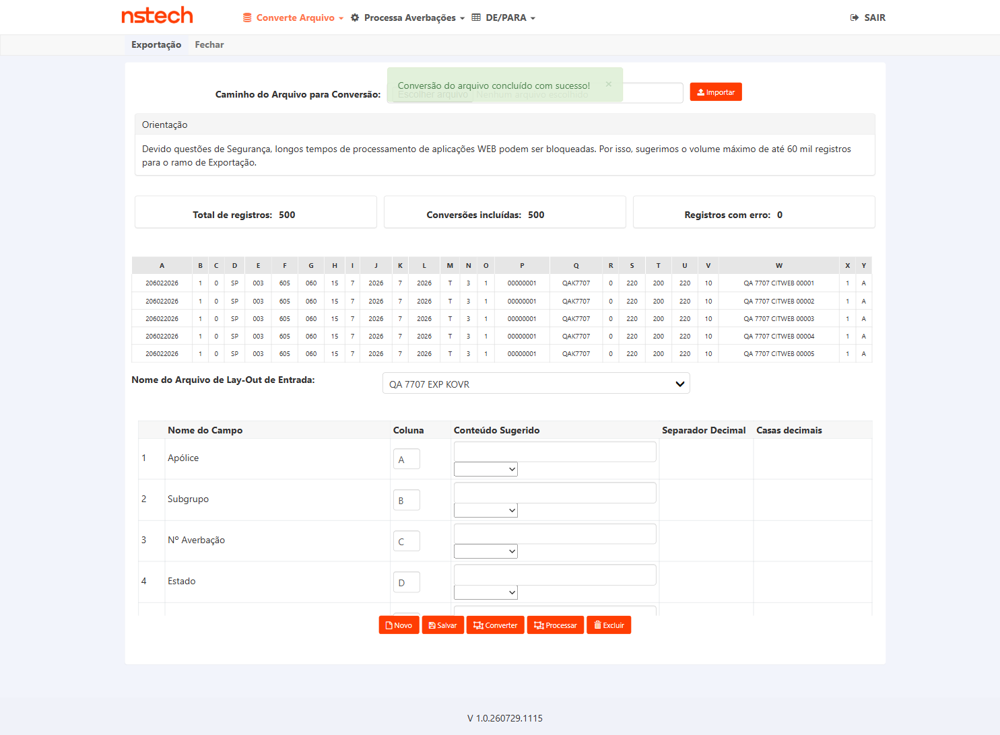
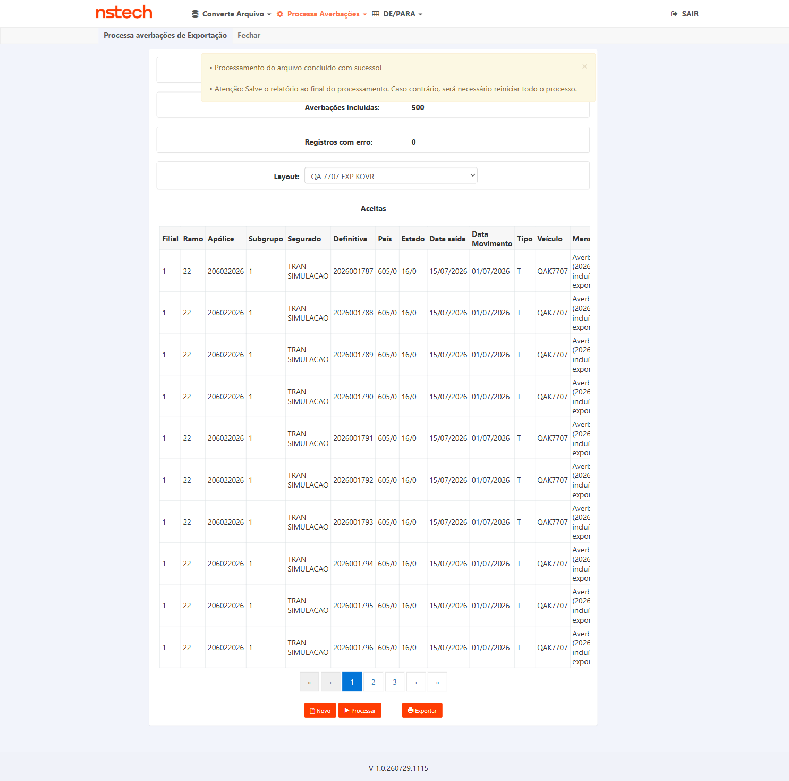
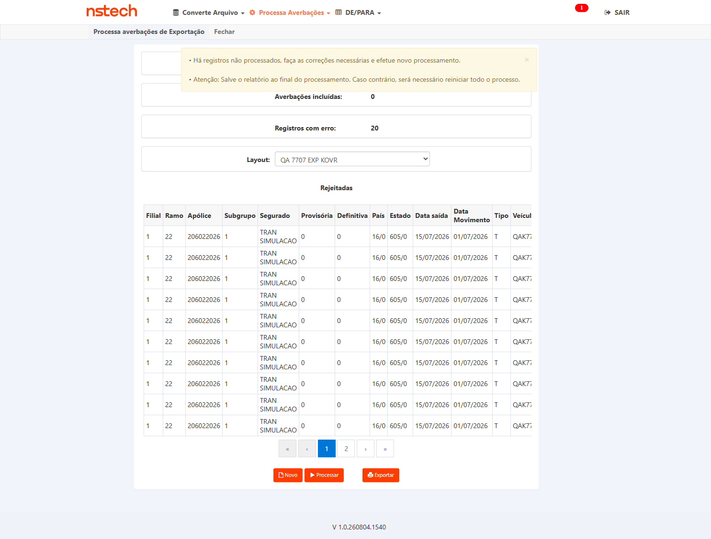
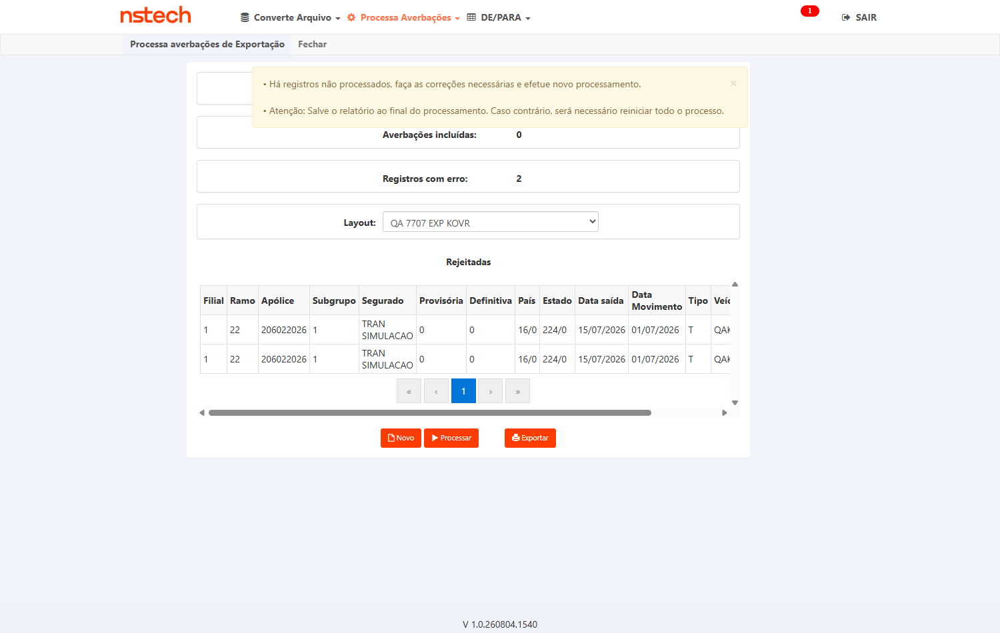
Ind_Conversor_Processamento_BulkCopy='S' em AXA, FAIRFAX e TOKIO; ausente na KOVR (linha inexistente = inativo, porque Indicativos.IsAtivo usa TryGetValue e devolve false quando a chave não existe).Objetivo
Solução escalável: aplicada a outra seguradora deve funcionar sem código específico.
Passos
- Ativar indicativo em outra seguradora com conversor de Exportação
- Processar arquivo de Exportação
- Confirmar paridade funcional sem ajuste de código
Resultado Esperado
FAIRFAX (build 260703.1628) 20/20 ✓ · AXA (build 260804.1125) 20/20 ✓ · KOVR (build 260804.1540) 0/20 ✗
Primeiro: o motivo do bloqueio anterior estava errado — e por isso o CT ficou 4 dias parado
Eu havia registrado que o indicativo "é appSettings de deploy, não existe nas bases HML; o QA não consegue ligar nem ler". É uma linha de banco, em tb_ctl_sis_cit, perfeitamente legível por mim — a própria evidência que a Andreia anexou no card em 31/07 mostra a query dela: select * from tb_ctl_sis_cit where n_fun_sis like 'Ind_Conversor_Processamento_BulkCopy'. A resposta dela chegou às 18:24 de 31/07 e o CT continuou marcado como bloqueado por informação faltante; a informação já estava no card.
Execução — três seguradoras
| Seguradora | Indicativo | Build do Conversor | Conversão | Processamento |
|---|---|---|---|---|
| FAIRFAX (tenant novo) | S (10/06/2025) | 1.0.260703.1628 | 20/20 | 20 incluídas · 0 erro |
| AXA | S (29/09/2025) | 1.0.260804.1125 | 20/20 | 20 incluídas · 0 erro |
| KOVR | ausente (off) | 1.0.260804.1540 | 20/20 | 0 incluídas · 20 rejeitadas |
O que a FAIRFAX prova e o que não prova. Prova que o fluxo é genuinamente multi-tenant no que depende de configuração: montei do zero a massa de uma seguradora onde este card nunca rodou — apólice de exportação vigente, layout posicional próprio (os layouts EXP da FAIRFAX são por posição, TXT de largura fixa, não por coluna de planilha como o da AXA), DE/PARA local — e o par converter+processar passou de primeira, sem uma linha de código ou config específica. Não prova o código refatorado: o Conversor da FAIRFAX está no build de 03/07, anterior à task de dev deste card (#7845, concluída em 28/07). Vale como linha de base, não como aceite.
Por que o CT é REPROVADO. A única outra seguradora que já está no build mais novo é a KOVR — e lá o processamento recusa 100% dos registros (País 0 sem cobertura), na mesma apólice e layout que gravaram 500 averbações em 31/07. Enquanto o pacote não roda igual em duas seguradoras, o CA de solução escalável não está atendido. Detalhamento da regressão e contraprova: CT-CEX-007 acima e Task #8013.
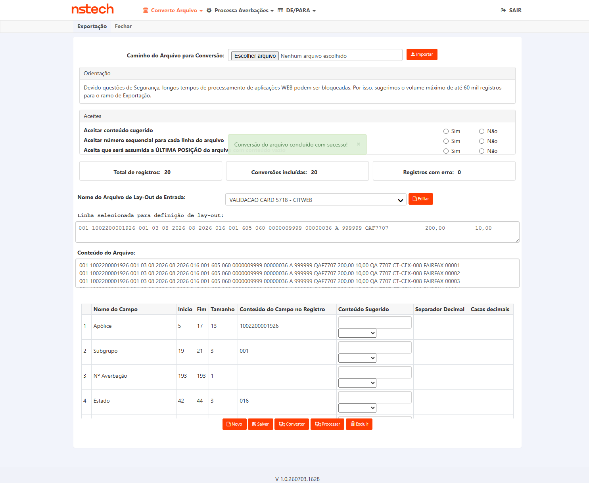
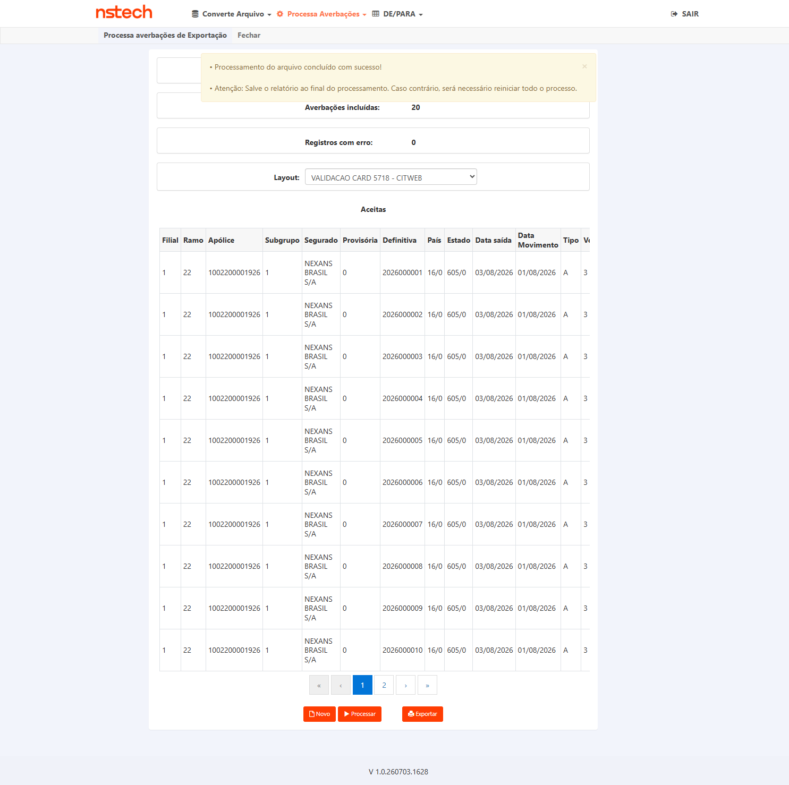
Reprodutibilidade
Massa FAIRFAX gerada por gerar_massa_exportacao_fairfax_txt.py (novo, arquivo posicional de 193 chars, apólice 1002200001926 · filial 1 · subgrupo 1 · saída 03/08/2026 · SP→CHINA). Os dois scripts de execução ganharam o tenant fairfax e o gerador de XLSX ganhou overrides PAIS_OVR/CPL_PAIS_OVR/ESTADO_OVR — foram eles que permitiram a contraprova do país 224 sem reescrever massa.
| Critério de aceite | CT(s) |
|---|---|
| Gravação via SqlBulkCopy quando indicativo ativo | CT-CEX-002, 003 |
| Tempo ≤ alvo p/ ≥7.000 registros (≥0,5s/reg) | CT-CEX-003, 004 |
| Paridade funcional (Aceitas+Rejeitadas) | CT-CEX-002 |
| Falha no BulkCopy → nenhuma averbação perdida | CT-CEX-006 |
| Indicativo inativo → regressão zero | CT-CEX-007 |
| Escalável/multi-seguradora | CT-CEX-008 |
CAs herdados do #7471/refinamento Andreia (mesma frente de refactoring). Card #7707 sem CA formal → derivados e a confirmar no aceite.
- Dev não iniciado (Alto p/ cronograma): card em Pronto para desenvolvimento — execução depende do deploy. Mitigação: plano pronto para executar assim que subir em HML.
- Atomicidade insert+delete (Alto): risco de perda de averbação se a exclusão não for diferida. Mitigação: CT-CEX-006 bloqueante.
- Massa ≥7.000 registros (Médio): gerar arquivo grande de Exportação. Mitigação: mesma estratégia do #7471/#7681.